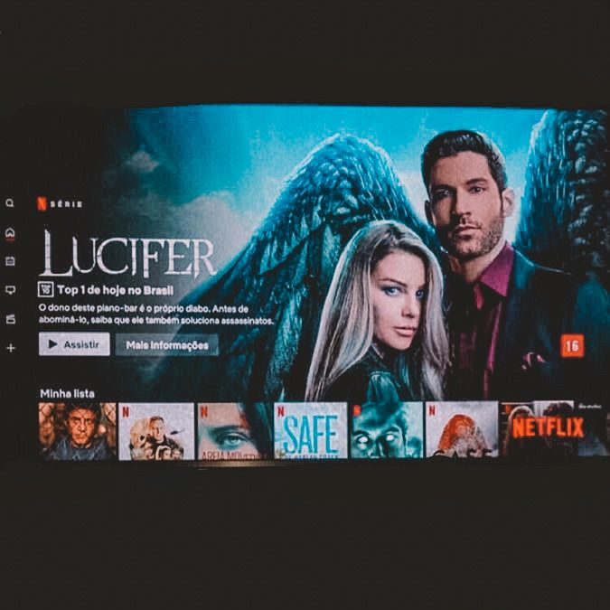
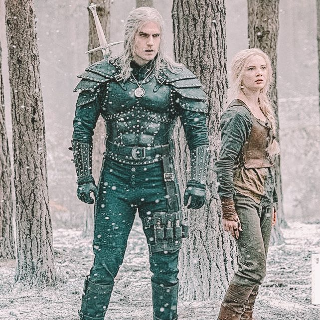
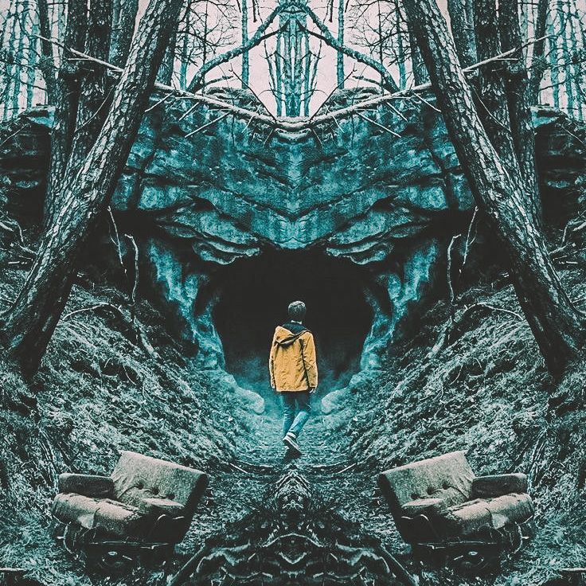

Assistir séries
Quando tenho tempo livre, eu gosto de assistir séries, sempre me aventuro em novos gêneros e defino o que vou assistir de acordo com o meu humor. Sempre que tenho oportunidade maratono séries na madrugada.
Amo séries clichês e amo séries que criam um triplex na minha cabeça. Tento fazer minha assinatura na netflix valer a pena. Atualmente minhas séries preferidas são The witcher, Lúcifer e Dark.
← Voltar aos hobbies